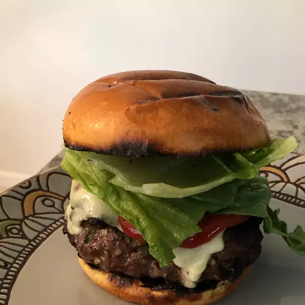

Odin's Burger

The burger that made the AllFather cried
Ingredients
- 5 fresh jalapeno peppers
- 4 pounds ground beef
- salt and pepper to taste
- 1 egg
- ¼ cup steak sauce, (e.g. Heinz 57)
- 1 pinch dried oregano
- 1 tablespoon Worcestershire sauce
- 1 teaspoon garlic salt
- 8 large potato hamburger buns
- 8 slices pepperjack cheese